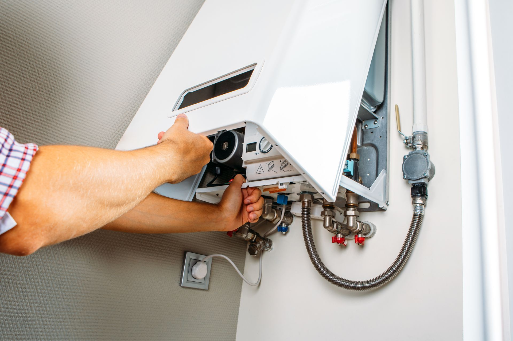

Water Heater Repair in Garland, TX: Gas, Leaks & Same-Day Service
Speake's Plumbing has provided hot water heater repair in Garland, TX, since 1987. If your unit has stopped producing hot water, makes strange noises, or is leaking, call 972-271-9144 to reach a licensed plumber and schedule same-day service.
What Are the Signs Your Garland Water Heater Needs Repair?
Watch for these common warning signs:
- No hot water or only lukewarm output.
- Popping, rumbling, or banging sounds from the tank.
- Rusty or discolored hot water.
- Water pooling around the base of the unit.
- A pilot light that won't stay lit on gas models.
- Rising energy bills without a change in usage.
Garland's water is hard (7 to 10.5 grains per gallon). Mineral sediment collects at the tank bottom, straining the burner and causing popping sounds. Annual flushing reduces buildup and extends unit life.
Is It Safe to Repair a Gas Water Heater Yourself in Garland, TX?
No. Gas water heater repair belongs with a licensed plumber. Connections, burners, pilot systems, and venting all demand technical skill. Garland also requires a permit for water heater replacement, pulled by a state-licensed master plumber registered with the City. Speake's handles all permitting and code compliance.
Gas vs. Electric: What Changes for Each Repair Type
Gas units may need a thermocouple, gas valve, burner cleaning, or venting fix. Electric units more often need a heating element or thermostat. Speake's services both, with common parts on every van.
Garland Water Heater Leak Repair: Act Quickly
A leaking water heater can cause floor damage and mold. If water pools around the base, shut off the cold water supply, set the gas valve to “pilot” or trip the breaker, and call 972-271-9144 right away.
How Much Does Water Heater Repair Cost in Garland?
Cost depends on the part, fuel type, and permitting. Minor fixes cost far less than full replacement. Rule of thumb: if your unit is over 10 years old and repair costs approach 50% of a new one, replace it. Speake's gives honest pricing before work starts.
Repair vs. Replace Decision Guide
- Check the age: tank heaters in Garland's hard water usually last 8 to 12 years.
- Get a diagnosis from a licensed plumber before deciding.
- Compare costs: under 40 to 50% of a new unit, repair wins.
- Assess the leak: a leaking tank itself warrants replacement.
- Consider efficiency: older units cost more monthly to run.
Why Garland Homeowners Choose Speake's Plumbing
Speake's has served Garland since 1987 with nine licensed plumbers, three at the master level. Every job goes to a licensed plumber. Call 972-271-9144 Monday through Friday, 7:00 AM to 5:00 PM, to schedule your water heater repair in Garland, TX.
